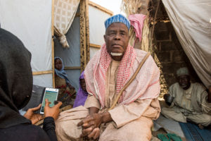
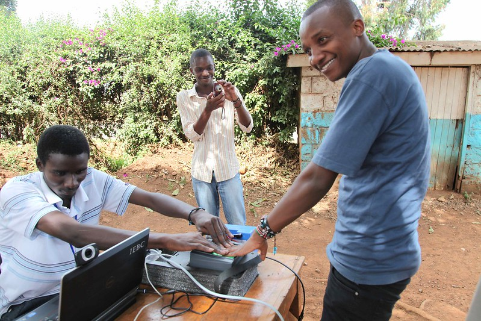

Digital IDs
What are digital IDs?

Digital IDs are identification systems that rely on digital technology. Biometric technology is one kind of tool often used for digital identification: biometrics allow people to prove their identity based on a physical characteristic or trait (biological data). Other forms of digital identification include cards and mobile technologies. This resource, which draws on the work of The Engine Room, will look at different forms and the implications of digital IDs, with a particular focus on biometric IDs, including their integration with health systems and their potential for e-participation.
“Biometrics are not new – photographs have been used in this sector for years, but current discourse around ‘biometrics’ commonly refers to fingerprints, face prints and iris scans. As technology continues to advance, capabilities for capturing other forms of biometric data are also improving, such that voice prints, retinal scans, vein patterns, tongue prints, lip movements, ear patterns, gait, and of course, DNA, can be used for authentication and identification purposes.””

Biometric Data: automatically measurable, distinctive physical characteristics or personal traits used to identify or verify the identity of an individual.
Consent: Article 4(11) of the General Data Protection Regulation (GDPR) defines consent: “Consent of the data subject means any freely given, specific, informed and unambiguous indication of the data subject’s wishes by which he or she, by a statement or by a clear affirmative action, signifies agreement to the processing of personal data relating to him or her.” See also the Data Protection resource.
Data Subject: the individual whose data is collected.
Digital ID: an electronic identity-management system used to prove an individual’s identity or their right to access information or services.
E-voting: an election system that allows a voter to record their secure and secret ballot electronically.
Foundational Biometric Systems: systems that supply general identification for official uses, like national civil registries and national IDs.
Functional Biometric Systems: systems that respond to a demand for a particular service or transaction, like voter IDs, health records, or financial services.
Identification/One-to-Many Authentication: using the biometric identifier to identify the data subject from within a database of other biometric profiles.
Immutability: the quality of a characteristic that does not change over time (for example, DNA).
Portable Identity: an individual’s digital ID credentials may be taken with them beyond the initial issuing authority, to prove official identity for new user relationships/entities, without having to repeat verification each time.
Self-Sovereign Identity: a digital ID that gives the data subject full ownership over their digital identity, guaranteeing them lifetime portability, independent from any central authority.
Uniqueness: a characteristic that sufficiently distinguishes individuals from one another. Most forms of biometric data are singularly unique to the individual involved.
Verification/One-to-One Authentication: using the biometric identifier to confirm that the data subject is who they claim to be.
How do digital IDs work?
There are three primary categories of technology used for digital identification: biometrics, cards, and mobile. Within each of these areas, a wide range of technologies may be used.
The NIST (National Institute of Standards and Technology, one of the primary international authorities on digital IDs) identifies three parts of how the digital ID process works.
Part 1: Identity proofing and enrollmentThis is the process of binding the data on the subject’s identity to an authenticator, which is a tool that is used to prove their identity.
- With a biometric ID, this involves collecting the data (through an eye scan, fingerprinting, submitting a selfie, etc.), verifying that the person is who they claim to be, and connecting the individual to an identity account (profile).
- With a non-biometric ID, this involves giving the individual a tool (an authenticator) they can use for authentication, like a password, a barcode, etc.
This is the process of using the digital ID to prove identity or access services.
Biometric authentication: There are two different types of biometric authentication.
- Biometric Verification (or One-to-One Authentication) confirms that the person is who they say they are. This allows organizations to determine, for example, that a person is entitled to certain food, vaccine, or housing.
- Biometric Identification (or One-to-Many Authentication) is used to identify an individual from within a database of biometric profiles. Organizations may use biometrics for identification to prevent fraudulent enrollments and to “de-duplicate” lists of people. One-to-many authentication systems pose more risks than one-to-one systems because they require a larger amount of data to be stored in one place and because they lead to more false matches. (Read more in the Risks section).
The chart below synthesizes the advantages and disadvantages of different biometric authentication tools. For further details, see the World Bank’s “Technology Landscape for Digital Identification (2018).”
| Biometric Tool | Advantages | Disadvantages |
|---|---|---|
| Fingerprints | Less physically/personally invasive; advanced and relatively affordable method | Not fully inclusive: some fingerprints are harder to capture than others |
| Iris Scan | Fast, accurate, inclusive, and secure | More expensive technology; verification requires precise positioning of data subject; can be misused for surveillance purposes (verification without data subject’s permission) |
| Face Recognition | Relatively affordable | Prone to error; can be misused for surveillance purposes (verification without data subject’s permission); not enough standardization among technology suppliers, which could lead to vendor lock-in |
| Voice Recognition | Relatively affordable; no concerns about hygiene (unlike some other biometrics that involve touch) | Collection process can be difficult and time-consuming; technology is difficult to scale |
| Behavior Recognition, also known as “Soft Biometrics” (i.e., a person’s gait, how they write their signature) | Can be used in real time | Prone to error; not yet a mature technology; can be misused for surveillance purposes (verification without data subject’s permission) |
| Vascular Recognition (A person’s distinct pattern of veins) | Secure, accurate, and inclusive technology | More expensive; not yet a mature technology and not yet widely understood; not interoperable/data are not easily portable |
| DNA Profiling | Secure; accurate; inclusive; useful for large populations | Collection process is long; technology is expensive; involves extremely sensitive information which can be used to identify race, gender, and family relationships, etc. that could put the individual at risk |
Non-biometric authentication: There are two common forms of digital ID that are not based on physical characteristics or traits, which also have authentication methods. Digital ID cards and digital ID applications on mobile devices can also be used to prove identity or to access services or aid (much like a passport, residence card, or driver’s license).
- Cards: These are a common digital identifier, which can rely on many kinds of technology, from microchips to barcodes. Cards have been in use for a long time which makes them a mature technology, but they are also less secure because they can be lost or stolen. “Smart cards” exist in the form of an embedded microchip combined with a password. Cards can also be combined with biometric systems. For example, Mastercard and Thales began offering cards with fingerprint sensors in January 2020.
- Apps on mobile devices: Digital IDs can be used on mobile devices by relying on a password, a “cryptographic” (specially encoded) SIM card, or a “Smart ID” app. These methods are fairly accurate and scalable, but they have security risks and also risks over the long term due to reliance on technology providers: the technology may not be interoperable or may become outdated (see Privatization of ID and Vendor Lock-In in the Risks section ).
Digital IDs are usually generated by a single issuing authority (NGO, government entity, health provider, etc.) for an individual. However, portability means that digital ID systems can be designed to allow the person to use their ID elsewhere than with the issuing authority — for example with another government entity or non-profit organization.
To understand interoperability, consider different email providers, for instance, Gmail and Yahoo Mail: these are separate service providers, but their users can send emails to one another. Data portability and interoperability are critical from a fundamental rights perspective, but it is first necessary that different networks (providers, governments) be interoperable with one another to allow for portability. Interoperability is increasingly important for providing services within and across countries, as can be seen in the European Union and Schengen community, the East African community, and the West African ECOWAS community.
Self-Sovereign Identity (SSI) is an important, emerging type of digital ID that gives a person full ownership over their digital identity, guaranteeing them lifetime portability, independent from any central authority. The Self-Sovereign Identity model aims to remove the trust issues and power imbalances that generally accompany digital identity, by giving a person full control over their data.
How are digital IDs relevant in civic space and for democracy?
People across the world who are not identified by government documents face significant barriers to receiving government services and humanitarian assistance. Biometrics are widely used by donors and development actors to identify individuals and connect them with services. Biometric technology can increase access to finance, healthcare, education, and other critical services and benefits. It can also be used for voter registration and in facilitating civic participation.
The United Nations High Commissioner for Refugees (UNHCR) began its global Biometric Identity Management System (“BIMS”) in 2015, and the following year the World Food Program began using biometrics for multiple purposes, including refugee protection, cash-based interventions, and voter registration. In recent years, a growing preference in aid delivery for cash-based interventions has been part of the push towards digital IDs and biometrics, as these tools can facilitate monitoring and reporting of assistance distribution.
The automated nature of digital IDs brings many new challenges, from gathering meaningful informed consent, to guaranteeing personal security and organization-level security, to potentially harming human dignity and increasing exclusion. These technical and societal issues are detailed in the Risks section.
Ethical Principles for BiometricsFounded in July 2001 in Australia, the Biometrics Institute is an independent and international membership organization for the biometrics community. In March of 2019, they released seven “Ethical Principles for Biometrics.”
-
Ethical behaviour: We recognise that our members must act ethically even beyond the requirements of law. Ethical behaviour means avoiding actions which harm people and their environment.
-
Ownership of the biometric and respect for individuals’ personal data: We accept that individuals have significant but not complete ownership of their personal data (regardless of where the data are stored and processed) especially their biometrics, requiring their personal data, even when shared, to be respected and treated with the utmost care by others.
-
Serving humans: We hold that technology should serve humans and should take into account the public good, community safety and the net benefits to individuals.
-
Justice and accountability: We accept the principles of openness, independent oversight, accountability and the right of appeal and appropriate redress.
-
Promoting privacy-enhancing technology: We promote the highest quality of appropriate technology use including accuracy, error detection and repair, robust systems and quality control.
-
Recognising dignity and equal rights: We support the recognition of dignity and equal rights for all individuals and families as the foundation of freedom, justice and peace in the world, in line with the United Nations Universal Declaration of Human Rights.
-
Equality: We promote planning and implementation of technology to prevent discrimination or systemic bias based on religion, age, gender, race, sexuality or other descriptors of humans.
Opportunities

If you are trying to understand the implications of digital IDs in your work environment, or are considering using aspects of digital IDs as part of your DRG programming, ask yourself these questions:
Potential fraud reduction
Biometrics are frequently cited for their potential to reduce fraud and more generally manage financial risk by facilitating due diligence oversight and scrutiny of transactions. According to The Engine Room, these are frequently-cited justifications for the use of biometrics among development and humanitarian actors, but The Engine Room also found a lack of evidence to support this claim. It should not be assumed that fraud only occurs at the beneficiary level: the real problems with fraud may occur elsewhere in an ecosystem.
Beyond the distribution of cash and services, the potential of digital IDs and biometrics is to facilitate the voting process. The right to vote, and to participate in democratic processes more broadly, is a fundamental human right. Recently, the use of biometric voter registration and biometric voting systems has become more widespread as a means of empowering civic participation and securing electoral systems, and protecting against voter fraud and multiple enrollments.
Advocates claim that e-voting can reduce the costs of participation and make the process more reliable. Meanwhile, critics claim that digital systems are at risk of failure, misuse, and security breach. Electronic ballot manipulation, poorly written code, or any other kind of technical failure could compromise the democratic process, particularly when there is no backup paper trail. For more, see “Introducing Biometric Technology in Elections” (2017) by the International Institute for Democracy and Electoral Assistance, which includes detailed case studies on e-voting in Bangladesh, Fiji, Mongolia, Nigeria, Uganda, and Zambia.
Securing electronic health records, particularly when care services are provided by multiple actors, can be very complicated, costly, and inefficient. Because biometrics link a unique verifier to a single individual, they are useful for patient identification, allowing doctors and health providers to connect someone to their health information and medical history. Biometrics have potential in vaccine distribution, for example, by being able to identify who has received specific vaccines (see the case study by The New Humanitarian about Gavi technology).
Access to healthcare can be particularly complicated in conflict zones, for migrants and displaced people, or for other groups without their documented health records. With interoperable biometrics, when patients need to transfer from one facility to another for whatever reason, their digital information can travel with them. For more, see the World Bank Group ID4D, “The Role of Digital Identification for Healthcare: The Emerging Use Cases” (2018).
Digital ID systems have the potential to include the unbanked or those underserved by financial institutions in the local or even global economy. Digital IDs grant people access to regulated financial services by enabling them to prove their official identity. Populations in remote areas can benefit especially from digital IDs that permit remote, or non-face-to-face, identity proofing/enrollment for customer identification/verification. Biometrics can also make accessing banking services much more efficient, reducing the requirements and hurdles that beneficiaries would normally face. The WFP provides an example of a successful cash-based intervention: in 2017, it launched its first cash-based assistance for secondary school girls in northwestern Pakistan using biometric attendance data.
According to the Financial Action Task Force by bringing more people into the regulated financial sector, biometrics further reinforce financial safeguards.
Biometric systems can reduce much of the administrative time and human effort behind aid assistance, liberating human resources to devote to service delivery. Biometrics permit aid delivery to be tracked in real-time, which allows governments and aid organizations to respond quickly to beneficiary problems.
Biometrics can also reduce redundancies in social benefit and grant delivery. For instance, in 2015, the World Bank Group found that biometric digital IDs in Botswana achieved a 25 percent savings in pensions and social grants by identifying duplicated records and deceased beneficiaries. Indeed, the issue of “ghost” beneficiaries is a common problem. In 2019, the Namibian Government Institutions Pension Fund (GIPF) began requiring pension recipients to register their biometrics at their nearest GIPF office and return to verify their identity three times a year. Of course, social-benefit distribution can be aided by biometrics, but it also requires human oversight, given the possibility of glitches in digital service delivery and the critical nature of these services (see more in the Risks section).
Migrants, refugees, and asylum seekers often struggle to prove and maintain their identity when they relocate. Many lose the proof of their legal identities and assets — for example, degrees and certifications, health records, and financial assets — when they flee their homes. Responsibly-designed biometrics can help these populations reestablish and maintain proof of identity. For example in Finland, a blockchain startup called MONI has been working since 2015 with the Finnish Immigration Service to provide refugees in the country with a prepaid credit card backed by a digital identity number stored on a blockchain . The design of these technologies is critical: data should be distributed rather than centralized to prevent security risks and misuse or abuse that come with centralized ownership of sensitive information.
Risks
The use of emerging technologies can also create risks in civil society programming. Read below on how to discern the possible risks associated with the use of digital ID tools in DRG work.
Dehumanization of beneficiariesThe way that biometrics are regarded — bestowing an identity on someone as if they did not have an identity previously — can be seen as problematic and even dehumanizing.
As The Engine Room explains, “the discourse around the ‘identifiability’ benefits of biometrics in humanitarian interventions often tends to conflate the role that biometrics play. Aid agencies cannot ‘give’ a beneficiary an identity, they can only record identifying features and check those against other records. Treating the acquisition of biometric data as constitutive of identity risks dehumanising beneficiaries, most of whom are already disempowered in their relationship with humanitarian entities upon whom they rely for survival. This attitude is evident in the remarks of one Burmese refugee undergoing fingerprint registration in Malaysia in 2006 — ‘I don’t know what it is for, but I do what UNHCR wants me to do’ — and of a Congolese refugee in Malawi, who upon completing biometric registration told staff, ‘I can be someone now.’”
It is critical to obtain the informed consent of individuals in the process of biometric enrollment. But it’s rarely the case in humanitarian and development settings, given the many confusing technical aspects of the technology, language, and cultural barriers, etc. An agreement that is potentially coerced, as illustrated by the case of the biometric registration program in Kenya, which was challenged in court after many Kenyans felt pressured into it, does not constitute consent. It is difficult to guarantee and even evaluate consent when the power imbalance between the issuing authority and the data subject is so substantial. “Refugees, for instance, could feel they have no choice but to provide their information, because they are in a vulnerable situation.”
Minors also face a similar risk of coerced or uninformed consent. As the Engine Room pointed out in 2016, “UNHCR has adopted the approach that refusal to submit to biometric registration amounts to refusal to submit to registration at all. If this is true, this constrains beneficiaries’ right to contest the taking of biometric data and creates a considerable disincentive to beneficiaries voicing opposition to the biometric approach.”
For consent to be given truly, the individual must have an alternative method available to them so they feel they can refuse the procedure without being disproportionately penalized. Civil society organizations could play an important role in helping to remedy this power imbalance.
Digital ID systems provide many important security features, but they increase other security risks, like the risk of data leakage, data corruption, or data use/misuse by unauthorized actors. Digital ID systems can involve very detailed data about the behaviors and movements of vulnerable individuals, for example, their financial histories and their attendance at schools, health clinics, and religious establishments. This information could be used against them, if in the hands of other actors (corrupt governments, marketers, criminals).
The loss, theft, or misuse of biometric data are some of the greatest risks for organizations deploying these technologies. By collecting and storing their biometric data in centralized databases, aid organizations could be putting their beneficiaries at serious risk, particularly if their beneficiaries are people fleeing persecution or conflict. In general, because digital IDs rely on the Internet or other open communications networks, there are multiple opportunities for cyberattacks and security breaches. The Engine Room also cites anecdotal accounts of humanitarian workers losing laptops, USB keys, and other digital files containing beneficiary data. See also the Data Protection resource.
Because biometrics are unique and immutable, once biometric data are out in the world, people are no longer the only owners of their identifiers. The Engine Room describes this as the “non-revocability” of biometrics. This means that biometrics could be used for other purposes than those originally intended. For instance, governments could require humanitarian actors to give them access to biometric databases for political purposes, or foreign countries could obtain biometric data for intelligence purposes. People cannot easily change their biometrics as they would a driver’s license or even their name: for instance, with facial recognition, they would need to undergo plastic surgery in order to remove their biometric data.
There is also the risk that biometrics will be put to use in future technologies that may be more intrusive or harmful than current usages. “Governments playing hosts to large refugee populations, such as Lebanon, have claimed a right to access to UNHCR’s biometric database, and donor States have supported UNHCR’s use of biometrics out of their own interest in using the biometric data acquired as part of the so-called ongoing “war on terror”
For more on the potential reuse of biometric data for surveillance purposes, see also “Aiding surveillance: An exploration of how development and humanitarian aid initiatives are enabling surveillance in developing countries,” I&N Working Paper (2014).
Because they are so technical and rely on multiple steps and mechanisms, digital ID systems can experience many errors. Biometrics can return false matches, linking someone to the incorrect identity, or false negatives, failing to link someone to their actual identity. Technology does not always function as it does in the laboratory setting when it is deployed within real communities. Furthermore, some populations are at the receiving end of more errors than others: for instance, as has been widely proven, people of color are more often incorrectly identified by facial recognition technology.
Some technologies are more error-prone than others, for example, soft biometrics which measure elements like a person’s gait are less mature and accurate technologies than iris scans. Even fingerprints, though relatively mature and widely used, still have a high error rate. The performance of some biometrics can also diminish over time: aging can change a person’s facial features and even their irises in a way that can impede biometric authentication. Digital IDs can also suffer from connectivity issues: lack of reliable infrastructure can reduce the system’s functioning in a particular geographic area for a significant period of time. To mitigate this, it is important that digital ID systems be designed to support both offline and online transactions.
When it comes to providing life-saving aid services, even a small mistake or malfunction during a single step in the process can cause severe harm. Unlike manual processes where humans are involved and can intervene in the case of error, automated processes bring the possibility that no one will notice a seemingly small technicality until it is too late.
Biometrics may exclude individuals for several reasons, according to The Engine Room: “Individuals may be reluctant to submit to providing biometric samples because of cultural, gender or power imbalances. Acquiring biometric samples can be more difficult for persons of darker skin color or persons with disabilities. Fingerprinting, in particular, can be difficult to undertake correctly, particularly when beneficiaries’ fingerprints are less pronounced due to manual and rural labor. All of these aspects may inhibit individuals’ provision of biometric data and thus exclude them from the provision of assistance.”
The kinds of errors mentioned in the section above are more frequent with respect to minority populations who tend to be underrepresented in training data sets, for example, people of color, and persons with disabilities.
Lack of access to technology or lower levels of technology literacy can compound exclusion: for example, lack of access to smartphones or lack of cellphone data or coverage may increase exclusion in the case of smartphone-reliant ID systems. As mentioned, manual laborers’ typically have worn fingerprints which can be difficult when using biometric readers; similarly, the elderly may experience match failure due to changes in their facial characteristics like hair loss or other signs of aging or illness — all increasing risk of exclusion.
The World Bank ID4D program explains that they often note differential rates in coverage for the following groups and their intersections: women and girls; orphans and vulnerable children; poor people; rural dwellers; ethnolinguistic minorities; migrants and refugees; stateless populations or populations at risk of statelessness; older people; persons with disabilities; non-nationals. It bears emphasizing that these groups tend to be the most vulnerable populations in society — precisely those that biometric technology and digital IDs aim to include and empower. When considering which kind of ID or biometric technology to deploy, it is critical to assess all of these types of potential errors in relation to the population, and in particular how to mitigate against the exclusion of certain groups.
“Technology is moving so fast that laws and regulations are struggling to keep up… Without clear international legislation, businesses in the biometrics world are often faced with the dilemma, ‘Just because we can, should we?’”
Isabelle Moeller, Chief Executive of the Biometrics Institute
Digital identification technologies exist in a continually evolving regulatory environment, which presents challenges to providers and beneficiaries alike. There are many efforts to create international standards for biometrics and digital IDs — for example, by the International Organization for Standardization (ISO) and the International Electrotechnical Commission (IEC). But beyond the GDPR, there is not yet sufficient international regulation to enforce these standards in many of the countries where they are being implemented.
The technology behind digital identities and biometrics is almost always provided by private-sector actors, often in partnership with governments and international organizations and institutions. The major role played by the private sector in the creation and maintenance of digital IDs can put both the beneficiaries and aid organizations and governments at risk of vendor lock-in: if the cost of switching to a new service provider is too expensive or onerous, the organization/actor may be forced to stay with their original supplier. Overreliance on a private-sector supplier can also bring security risks (for instance, when the original supplier’s technology is insecure) and can pose challenges to partnering with other services and providers when the technology is not interoperable. For these reasons, it is important for technology to be interoperable and to be designed with open standards.
IBM’s Facial Recognition Ban
In June of 2020, IBM decided to withdraw its facial-recognition technology from use by law enforcement in the U.S. These one-off decisions by private actors should not replace legal judgments and regulations. Debbie Reynolds, data privacy officer for Women in Identity, believes that facial recognition will not soon disappear, and so, considering the many flaws in the technology today, companies should focus on further improving the technology rather than on banning it. International regulation and enforcement are necessary first and foremost, as this will provide private actors with guidelines and incentives to design responsible, rights respecting technology over the long term.
Questions
If you are considering using digital ID tools as part of your programming, ask yourself these questions to understand the possible implications for your work and for your community and partners.
-
Has the beneficiary given their informed consent? How were you able to check their understanding? Was consent coerced in any way, perhaps due to a power dynamic or lack of alternative options?
-
How does the community feel about the technology? Does the technology fit with cultural norms and uphold human dignity?
-
How affordable is the technology for all stakeholders, including the data subjects?
-
How mature is the technology? How long has the technology been in use, where, and with what results? How well is it understood by all stakeholders?
-
Is the technology accredited? When and by whom? Is the technology based on widely accepted standards? Are these standards open?
-
How interoperable is the technology with the other technologies in the identity ecosystem?
-
How well does the technology perform? How long does it take to collect the data, to validate identity, etc? What is the error rate?
-
How resilient is the digital system? Can it operate without internet access or without reliable internet access?
-
How easy is the technology to scale and use with larger or other populations?
-
How secure and accurate is the technology? Have all security risks been addressed? What methods do you have in terms of backup (for example, a paper trail for electronic voting)
-
Is the collection of biometric data proportional in regards to the task at hand? Are you collecting the minimal amount of data necessary to achieve your goal?
-
Where are all data being stored? What other parties might have access to this information? How are the data protected?
-
Are any of the people who would receive biometric or digital IDs part of a vulnerable group? If digitally recording their identity could put them at risk, how could you mitigate against this? (for instance, avoiding a centralized database, minimizing the amount of data collected, taking cybersecurity precautions, etc.).
-
What power does the beneficiary have over their data? Can they transfer their data elsewhere? Can they request that their data be erased, and can the data in fact be erased?
-
If you are using digital IDs or biometrics to automate the fulfillment of fundamental rights or the delivery of critical services, is there sufficient human oversight?
-
Who is a technological error most likely to exclude or harm? How will you address this potential harm or exclusion?
Case studies
Aadhaar, India, the world’s largest national biometric systemAadhaar is India’s national biometric ID program, and the largest in the world. It is an essential case study for understanding the potential benefits and risks of such a system. Aadhaar is controversial. Many have attributed hunger-related deaths to failures in the Aadhaar system, which does not have sufficient human oversight to intervene when the technology malfunctions and prevents individuals from accessing their benefits. However, in 2018, the Indian Supreme Court upheld the legality of the system, saying it does not violate Indians’ right to privacy and could therefore remain in operation. “Aadhaar gives dignity to the marginalized,” the judges asserted, and “Dignity to the marginalized outweighs privacy.” While there are substantial risks, there are also significant opportunities for digital IDs in India, including increasing inclusivity and accessibility for otherwise unregistered individuals, to be able to access social services and participate in society.
In 2016, the World Food Program introduced biometric technology to the Zataari Refugee camp in Jordan. “WFP’s system relies on UNHCR biometric registration data of refugees. The system is powered by IrisGuard, the company that developed the iris scan platform, Jordan Ahli Bank, and its counterpart Middle East Payment Services. Once a shopper has their iris scanned, the system automatically communicates with UNHCR’s registration database to confirm the identity of the refugee, checks the account balance with Jordan Ahli Bank and Middle East Payment Services, and then confirms the purchase and prints out a receipt – all within seconds.” As of 2019, the program, which relies in part on blockchain technology, was supporting more than 100,000 refugees.
In January 2020, the New York Times reported that Kenya’s Digital IDs may exclude millions of minorities. In February, the Kenyan ID Huduma Namba was suspended by a High Court ruling, halting “the $60 million Huduma Namba scheme until adequate data protection policies are implemented. The panel of three judges ruled in a 500-page report that the National Integrated Identification Management System (NIIMS) scheme is constitutional, reports The Standard, but current laws are insufficient to guarantee data protection. […] Months after biometric capture began, the government passed its first data protection legislation in late November 2019, after the government tried to downgrade the role of data protection commissioner to a ‘semi-independent’ data protection agency with a chairperson appointed by the president. The data protection measures have yet to be implemented. The case was brought by civil rights groups including the Nubian Rights Forum and Kenya National Commission on Human Rights (KNCHR), citing data protection and privacy issues, that the way in which data protection legislation was handled in parliament prevented public participation, and how the NIIMs scheme is proving ethnically divisive in the country, particularly in border areas.”
Biometrics for child vaccination As explored in The New Humanitarian, 2019: “A trial project is being launched with the underlying betting that biometric identification is the best way to help boost vaccination rates, linking children with their medical records. Thousands of children between the ages of one and five are due to be fingerprinted in Bangladesh and Tanzania in the largest biometric scheme of its kind ever attempted, the Geneva-based vaccine agency, Gavi, announced recently. Although the scheme includes data protection safeguards – and its sponsors are cautious not to promise immediate benefits – it is emerging during a widening debate on data protection, technology ethics, and the risks and benefits of biometric ID in development and humanitarian aid.”
Financial Action Task Force Case Studies See also the case studies assembled by the Financial Action Task Force (FATF), the intergovernmental organization focused on combating terrorist financing. They released a comprehensive resource on Digital Identity in 2020, which includes brief case studies.
Digital Identity in the Migration and Refugee Context Digital Identity in the Migration and Refugee Context For migrants and refugees in Italy, identity data collection processes can “exacerbate existing biases, discrimination, or power imbalances.” One key challenge is obtaining meaningful consent. Often, biometric data are collected as soon as migrants and refugees arrive in a new country, at a moment when they may be vulnerable and overwhelmed. Language barriers exacerbate the issue, making it difficult to provide adequate context around the rights to privacy. Identity data are collected inconsistently by different organizations, all of whose data protection and privacy practices vary widely.
Using Digital IDs in Ukraine In 2019, USAID in partnership with the Ministry of Digital Transformation of Ukraine helped to launch the Diia app which allows citizens to access digital forms of identification that, since August of 2021, hold the same legal value as physical forms of identification. Diia has about 18 million total users in Ukraine and is the most frequently used app in the country. Support for the app is crucial for Ukraine’s digital development and has become increasingly important as the war has forced many to flee and caused damage to government buildings and existing infrastructure. The app allows users to store digital passports along with 14 other digital documents and access 25 public services all online.
References
Find below the works cited in this resource.
This primer draws from the work of The Engine Room, and the resource they produced in collaboration with Oxfam on Biometrics in the Humanitarian Sector, published in March 2018.
- ACE Electoral Knowledge Project. (2006). Kazakhstan: Voter registration case study.
- Biometrics Institute. (2019). Ethical Principles for Biometrics.
- Grassi, Paul A. et al. (2017). NIST Special Publication 800-63B Digital Identity Guidelines. NIST.
- Hosein, Gus & Carly Nyst. (2013). Aiding Surveillance. Privacy International.
- ICTWorks, (2018). Principles on Identification for Sustainable Development.
- Institute for Democracy and Electoral Assistance (IDEA), (2017). Introducing Biometric Technology in Elections.
- Kassen, Maxat. (2020). Politicization of e-voting rejection: reflections from Kazakhstan. Transforming Government: People, Process, and Policy 14(2).
- Pascu, Luana. (2020). How biometric transparency and regulation could secure privacy, prevent exclusion in digital identity. Biometric Update.
- The Financial Action Task Force (FATF), (2020). Guidance on Digital Identity.
- The World Bank, (2018). Technology Landscape for Digital Identification.
- The World Bank, (2018). The Catalog of Technical Standards for Digital Identification Systems.
- The World Bank, (2018). The Role of Digital Identification for Healthcare: The Emerging Use Cases.
- USAID, (2020). Digital Strategy 2020-2024.
- USAID, (2017). Identity in A Digital Age: Infrastructure For Inclusive Development.
- World Bank. (2019). Global ID Coverage, Barriers, and Use by the Numbers: Insights from the ID4D-Findex Survey.
- World Bank. (2019). ID4D Practitioner’s Guide.
- Xaver, Franz. (2018). From Understanding to Implementation – A focus on Trust Services. European Commission eIDAS Observatory.
Related Technologies & Trends
Technologies & Trends

Principles for Digital Development
- Design with the User
- Design for Scale
- Build for Sustainability
- Use Open Standards, Open Data, Open Source, and Open Innovation
- Address Privacy and Security